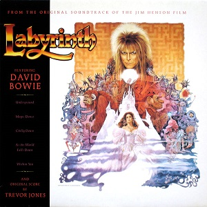

Soundtrack
The Labyrinth (1986) album is the official soundtrack to the
fantasy film of the same name, featuring music by
David Bowie and
Trevor Jones.
David Bowie contributed five original songs,
including:
- "Magic Dance"
- “As the World Falls Down”
- “Within You”
- “Underground” (which also served as the main single)
- “Chilly Down”
Trevor Jones, a film composer, created the instrumental
score that makes up the rest of the album. His compositions blend
orchestral music with synthesizers to reflect the film's whimsical and
eerie atmosphere.
The album mixes pop, rock, and theatrical elements, and while it wasn’t a
massive commercial hit at the time, it has become iconic due to Bowie’s
involvement and the film’s enduring cult status.
Side One
- "Opening Titles Including Underground"
- "Into the Labyrinth"
- "Magic Dance"
- "Sarah"
- "Chilly Down"
- "Hallucination"
Side Two
- "As the World Falls Down"
- "The Goblin Battle"
- "Within You"
- "Thirteen O'Clock"
- "Home at Last"
- "Underground"
